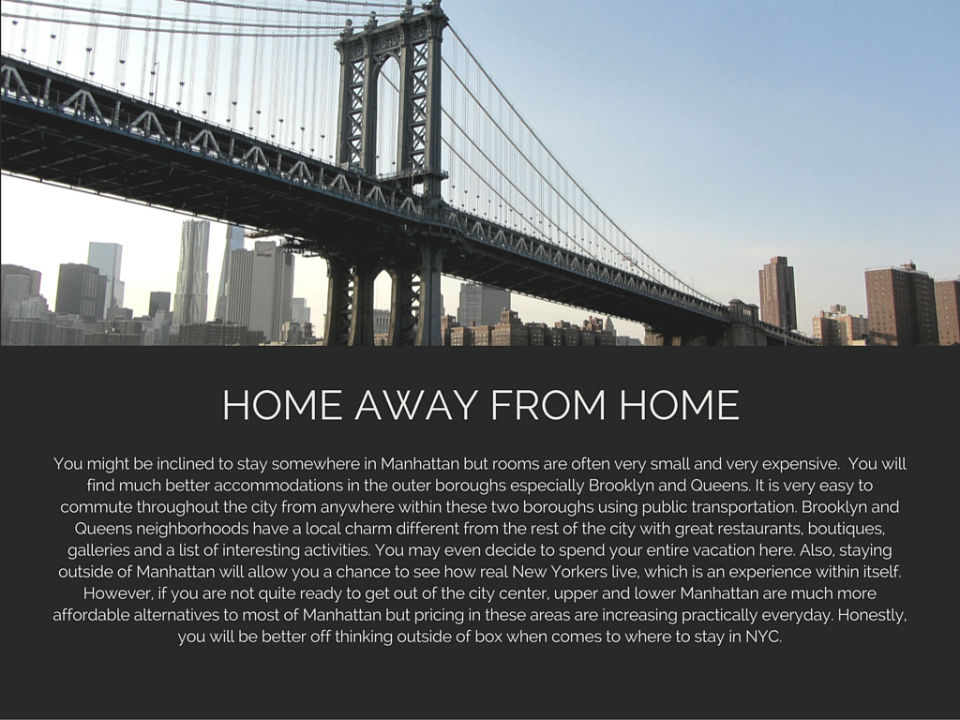
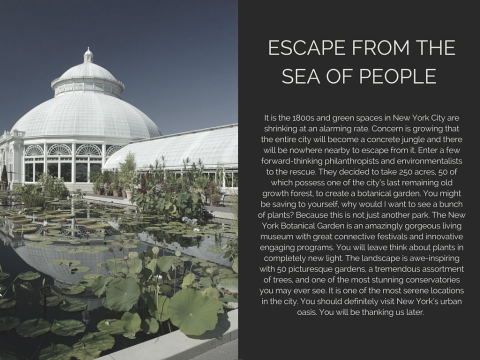

Chances are you have heard of Times Square, the Statue of Libery, and the Empire State Building.
Let me guess these are on the top of every "to do" list for NYC?
Well throw out the idea that those are some of the best things to do here.
There are five boroughs that make up this city and you should at visit a few while you are here.
Try starting in the Bronx where you probably never thought to go horseback rider!
Riverdale Stables will take you uptown, minutes away from the subway, and into what could be mistaken for a story-book forest.
After experiencing how people got around before the days of smart phones or even electricity, you might be ready to see how they managed to eat without fast-food restaurants.
Check out "Wildman" Steve Brill who will teach you how to forage for food right in the middle of the city.
Believe it or not, you get the skills to identify to various edible foods throughout the city's greenspaces.
Feeling like an extra for Game of Throne yet?
Well before you can step into the middle ages you will need to know how to defend yourself.
Your medieval experience culminates at Gotham Archery.
This Brooklyn institution will have you thinking you can go toe-to-toe with Robin Hood, Hawkeye, and the Green Arrow.
A day of this list of activities should knock some things off your bucket list or perhaps add to it but if you are still dying to see the Empire State Building, you can do that too...I guess.

A Vegan Guide To The Meatpacking District
OK, this next section has nothing to do with being a vegan.
The idea is see places like you might not expect and the meatpacking district has definitely become that kind of place.
From Native American trading post to endless slaughterhouses to now a posh urban center this western waterfront neighborhood of lower manhattan has become one of the most interesting places to visit in NYC.
You will be hard pressed to find a functioning meatpacking company in this district but what you will find is an incredible reinvented space.
A marriage between the modern urban today and the industrial historic past of New York.
A perfect example of this is the Highline Park.
What was once an elevated rail line designed to transport goods is now unique oasis rivaling Central Park as an escape from the fast-paced city.
At the foot of this public open space is one of NYC's best museums the Whitney.
The Whitney museum's vast collection of thousands of pieces of art, focuses on American artistry like no other museum.
There are few museums like this, which will definitely give you a disinctive experience.
You can not truly experience a nieghborhood with a name like the meatpacking district without eating!
So after you get through a day of parks and art get your full at Chelsea Market.
One of the most diverse assortment of food purveyors you will find anywhere in the world.
You should expect to end your day fulfilled mind, body, and soul.

It Takes A Village To Raise A City
Envision yourself in the Manhattan of yesteryear.
The landscape is predominantly residential row houses, with an intertwined network of carriage-sized streets, and the tallest structure is a two-storied courthouse mainly due to its clock tower.
Your possibly idea of a New York as an ever-expanding endless menagerie of business and skyscrapers might cause you to question such a place remaining in existence.
Say hello to Greenwich Village.
Greenwich Village dates back to the time when New York was a Dutch settlement and is one of the first areas designated a historic landmark.
Unfortunately, some of its 18th century visual appeal was demolished to create the avenues of the Manhattan grid system.
Nevertheless, Greenwich holds onto its quaint charm with its tiny zigzag named streets.
This neighborhood also has a reputation for progressive thinkers and is home to several important events in numerous counter-cultural movements.
Be sure to visit places like the Stonewall Inn and Washington Square Park, where some of these moments in history took place.
You can talk about Greenwich Village without mentioning entertainment and there are definitely some highly notable venues throughout this area.
However, Smalls Jazz Club has a piecemeal ragtag appeal more reflective of its surroundings than some other musical forums.
Furthermore, entertainment locales such as the Comedy Cellar, a compact subterranean comedy club with dramatically unpredictable line-ups, and IFC Center, a film house gem showcasing the latest and greatest in independent film,
should round out your list of can't miss activities.
There is literally a myriad of restaurants that will keep your belly full no matter what your taste.
Check out Two Boots pizzeria for some of the best most creative pizza in all of the country.
Then take a walk along Bleecker Street to sustenance shopping fix.
Where everything from the highest to lowest end in fashion can be found.
This meandering street is definitely welcomed alternative to New York's often congested fashion districts.
Greenwich Village is the last vestige of traditional Manhattan culture, which New York largely gets its notable prestige.
One visit here and you will witness why this is one of most coveted neighborhoods in the entire city.